Vienna
Vienna is a city of elegance, history, and quiet atmosphere. Walking through its wide boulevards, imperial buildings, old cafés, and peaceful parks, you can feel how classical Europe and modern city life meet in one place.
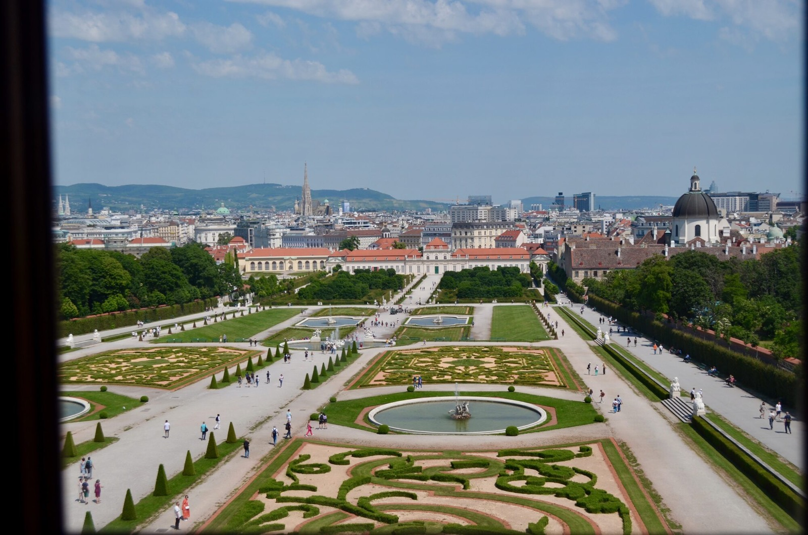
Austria
Wien is the capital and largest city of Austria, known for its rich history and cultural heritage.
Vienna is a city of elegance, history, and quiet atmosphere. Walking through its wide boulevards, imperial buildings, old cafés, and peaceful parks, you can feel how classical Europe and modern city life meet in one place.


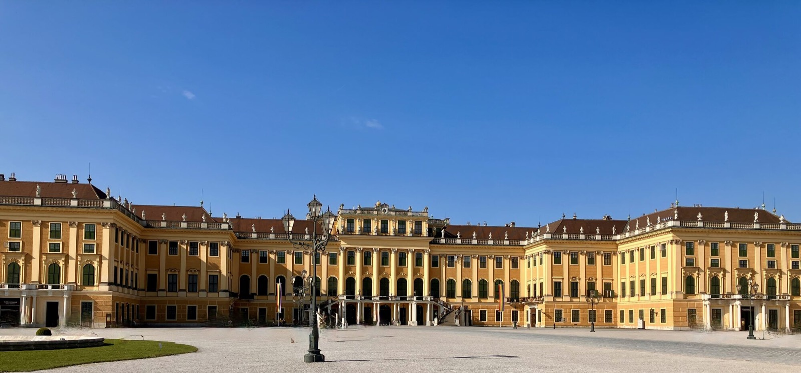
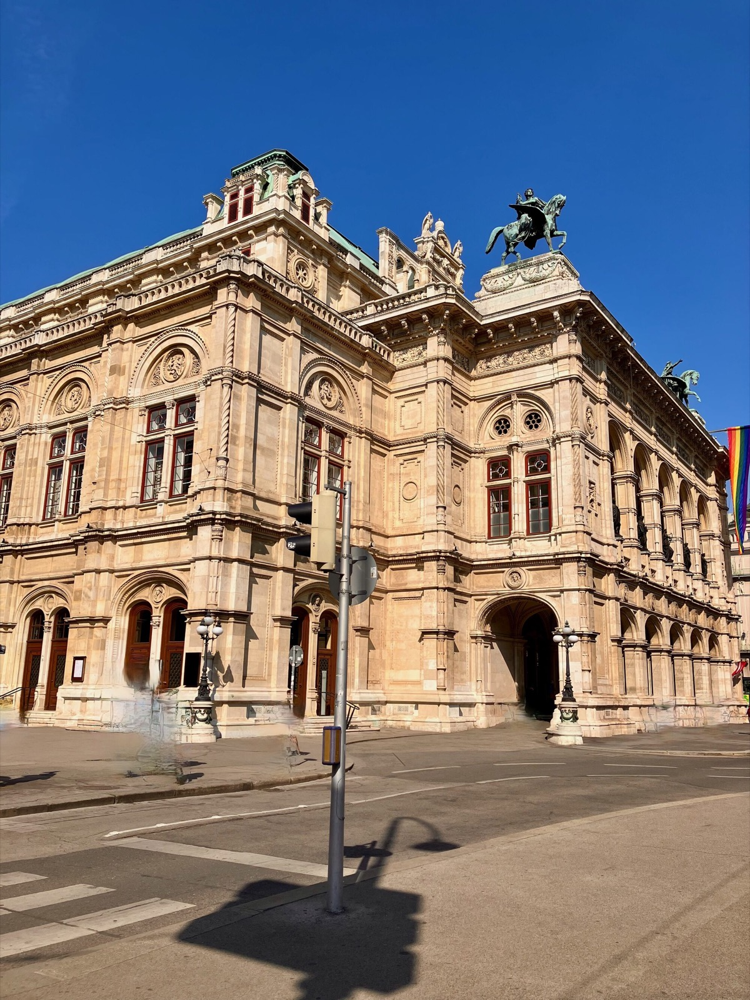


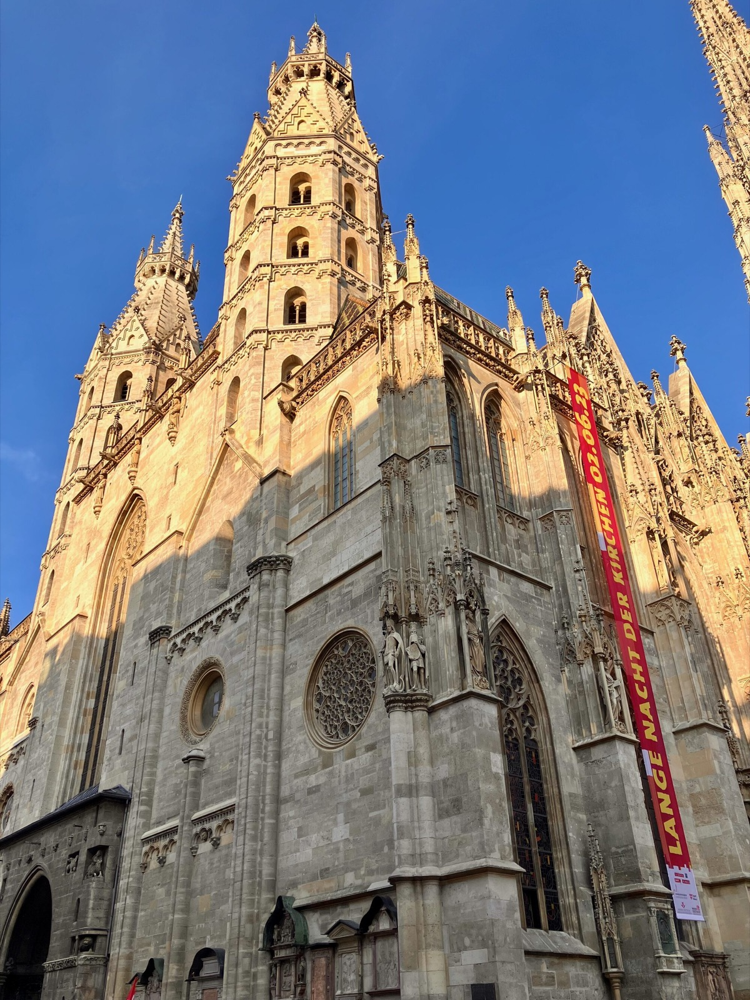
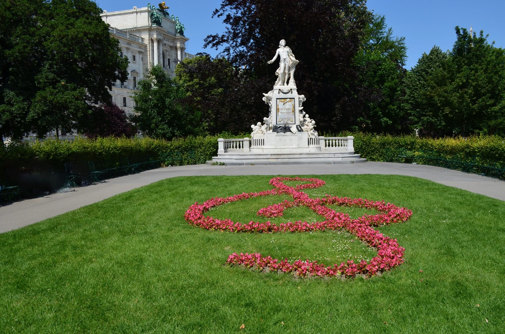
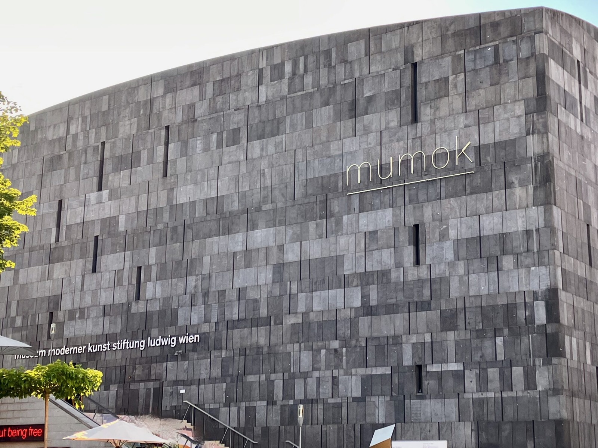


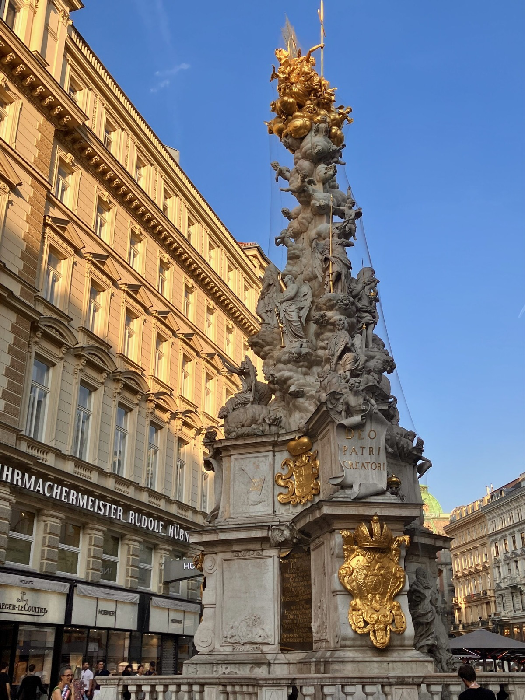


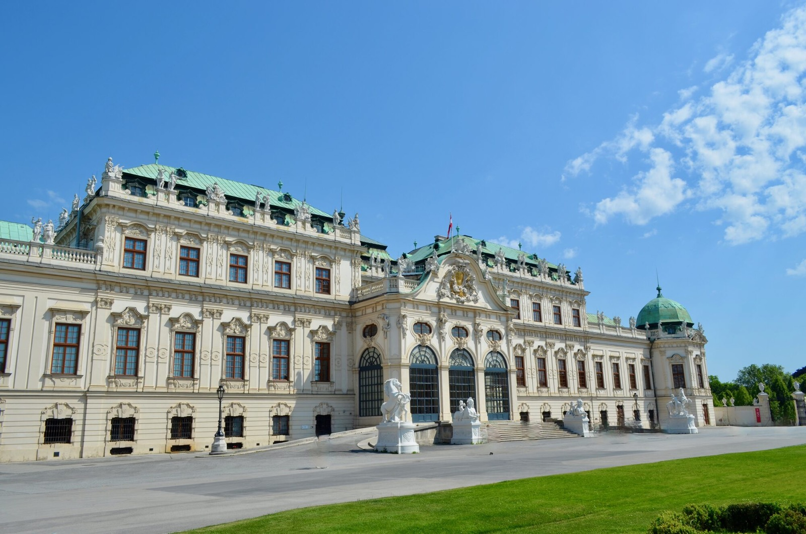
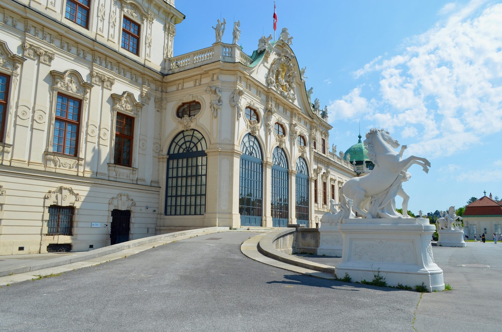
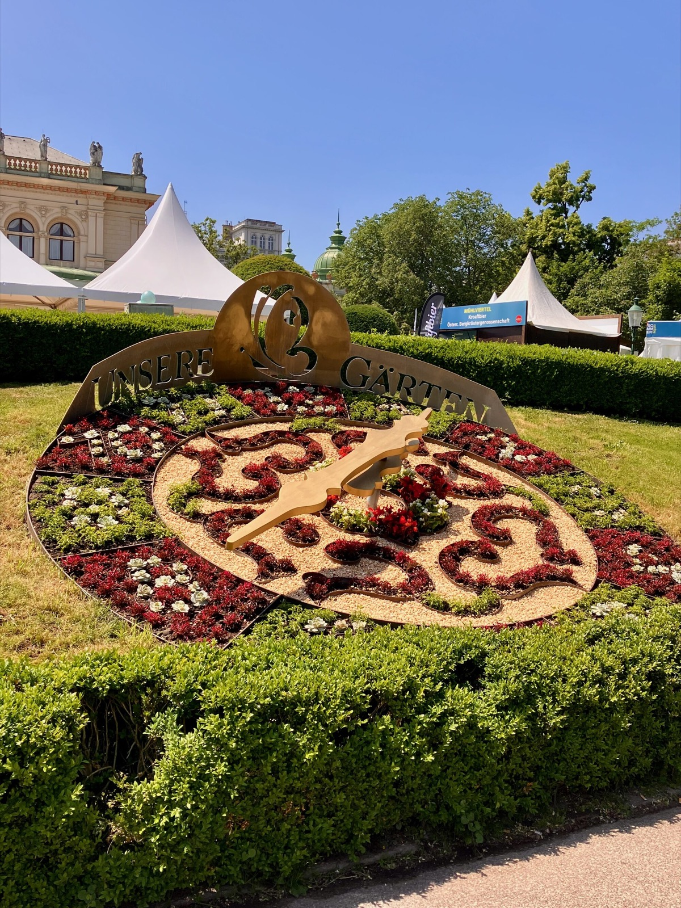
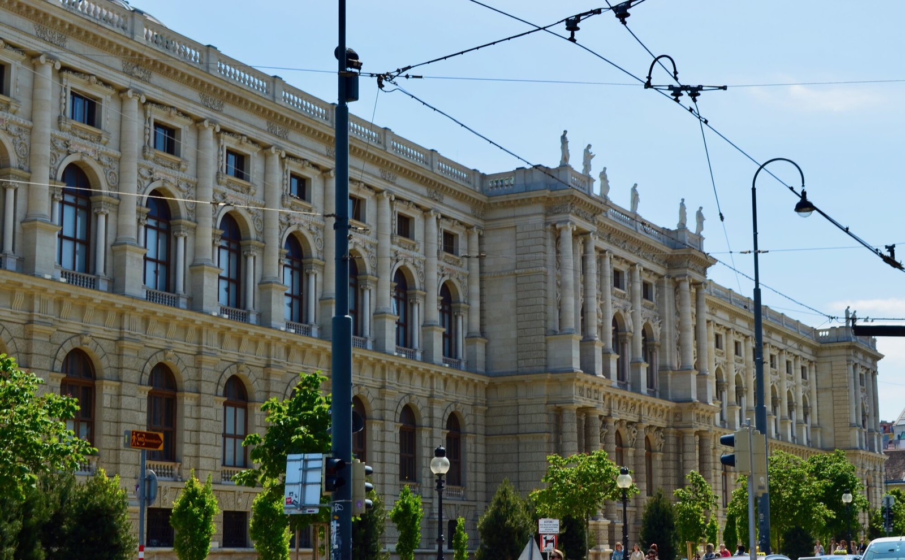